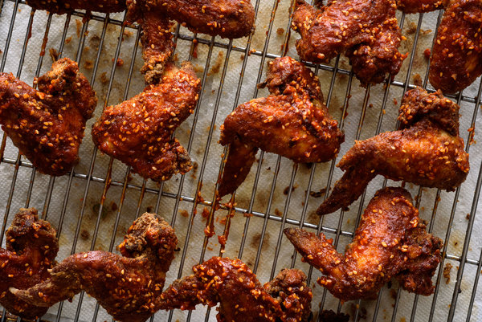

Korean Fried Chicken

Description
Spicy Korean fried chicken, known as Yangnyeom Dak, became very popular in New York after it was introduced around 2006. Cecilia Hae-Jin Lee, the author of Quick and Easy Korean Cooking, said fried chicken became popular in Korea when fast-food places opened there after the war.
Ingredients
- 1 small yellow onion, coarsely grated
- 2 cloves garlic, minced
- 1/2 teaspoon salt, plus more for coating
- 1/4 teaspoon black pepper, plus more for coating
- 8 to 10 boneless, skinless chicken thighs, quartered, or 24 wings
- 3 tablespoons Korean chili paste (gojuchang)
- 1/4 cup sugar
- 2 tablespoons toasted sesame seeds, more for garnish
- Juice of 1/2 lemon
- Oil for deep frying
- 1/2 cup all-purpose flour
- 2/3 cup cornstarch
Steps
- In a medium-size bowl, combine grated onion, garlic, salt and pepper. Add chicken and toss to coat well. Cover and set aside to marinate for about 1 hour.
- In a large bowl, stir together chili paste, ketchup, sugar, sesame seeds and lemon juice. Taste and adjust flavors to get a spicy-sweet-tangy finish. Set aside.
- Pour oil into a large heavy pot to a depth of 1 1/2 inches. Heat to 350 degrees. Combine flour and cornstarch in a shallow bowl and season with salt and pepper.
- Working in batches to avoid crowding, lift chicken from marinade, dredge lightly in seasoned flour and cornstarch, gently drop into oil and fry for 5 to 7 minutes, turning occasionally, until golden brown and crisp. Drain on paper towels. Repeat with remaining chicken, checking oil temperature between batches.
- For wings only, when all pieces are done, increase oil temperature to 375 degrees and refry in batches for 30 to 60 seconds, until very crisp. Drain once more on paper towels. While chicken is still hot, brush thickly with chili sauce. Serve hot, sprinkled with sesame seeds.